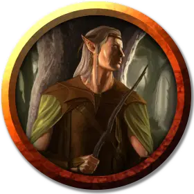

Волшебник лесной эльф
Wood Elf Wizard
Средний Гуманоид (Эльф), нейтрально-злой

Класс Доспеха 12 (15 с доспехами мага)
Хиты 45 (10к8)
Скорость 30 футов
| мод | спас | ||
|---|---|---|---|
| СИЛ | 9 | −1 | −1 |
| ЛОВ | 14 | +2 | +2 |
| ТЕЛ | 10 | +0 | +0 |
| мод | спас | ||
|---|---|---|---|
| ИНТ | 17 | +3 | +3 |
| МДР | 13 | +1 | +1 |
| ХАР | 12 | +1 | +1 |
Навыки Восприятие +4, Магия +6, Обман +5, Скрытность +5
Чувства тёмное зрение 120 футов, пассивное Восприятие 14
Языки Подземный, Эльфийский
Опасность 7 (2900 опыта)
Бонус мастерства +3
Особенности
Наследие фей. Лесной эльф совершает с преимуществом спасброски от очарования, и магия не может его усыпить.
Врождённое колдовство. Базовой характеристикой для врождённых заклинаний лесного эльфа является Харизма (Сл спасброска от заклинания 12). Он может накладывать следующие заклинания, не нуждаясь в материальных компонентах:
• Неограниченно: пляшущие огоньки [dancing lights]
• 1/день каждое: левитация [levitate] (только на себя), огонь фей [faerie fire], тьма [darkness]
Использование заклинаний. Лесной эльф является заклинателем 10-го уровня. Его базовой характеристикой является Интеллект (Сл спасброска от заклинания 14, +6 к попаданию атаками заклинаниями). У него подготовлены следующие заклинания волшебника:
• Заговоры (неограниченно): волшебная рука [mage hand], луч холода [ray of frost], малая иллюзия [minor illusion], ядовитые брызги [poison spray]
• 1 уровень (4 ячейки): ведьмин снаряд [witch bolt], волшебная стрела [magic missile], доспехи мага [mage armor], щит [shield]
• 2 уровень (3 ячейки): паутина [web], смена обличья [alter self], туманный шаг [misty step]
• 3 уровень (3 ячейки): молния [lightning bolt], полёт [fly]
• 4 уровень (3 ячейки): высшая невидимость [greater invisibility], Эвардовы чёрные щупальца [evard's black tentacles]
• 5 уровень (2 ячейки): облако смерти [cloudkill]
Действия
Посох. Рукопашная атака оружием: +2 к попаданию, досягаемость 5 футов, одна цель. Попадание: Дробящий урон 2 (1к6 − 1), или дробящий урон 3 (1к8 − 1), если используется двумя руками, плюс урон ядом 3 (1к6).
Призыв демона (1/день). Лесной эльф магическим образом призывает квазита, или пытается призвать теневого демона с 50-процентным шансом успеха. Призванный демон появляется в свободном пространстве в пределах 60 футов от призывателя, действует как его союзник, и не может призывать других демонов. Он присутствует в течение 10 минут, пока он, либо призыватель, не умрут, или пока призыватель не отпустит его действием.